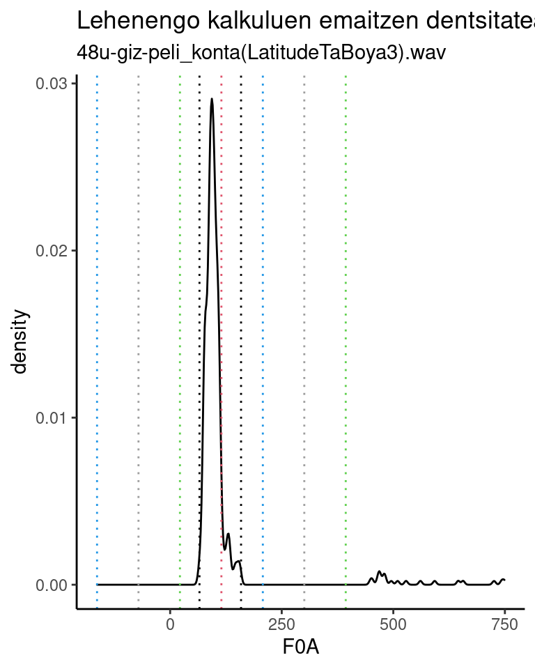
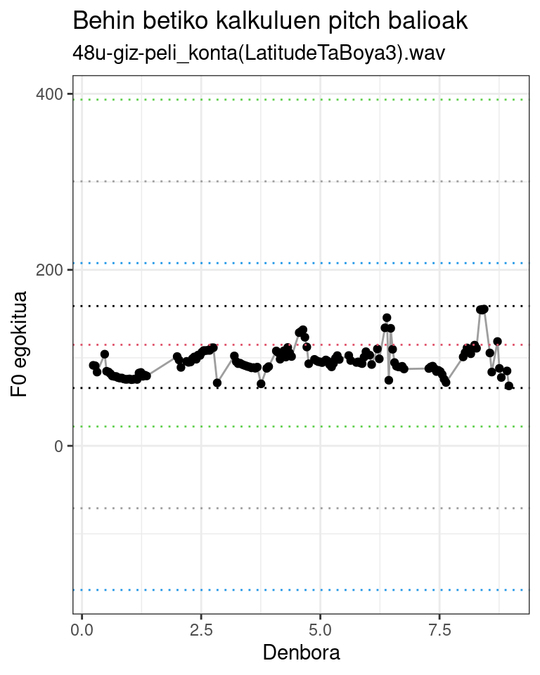
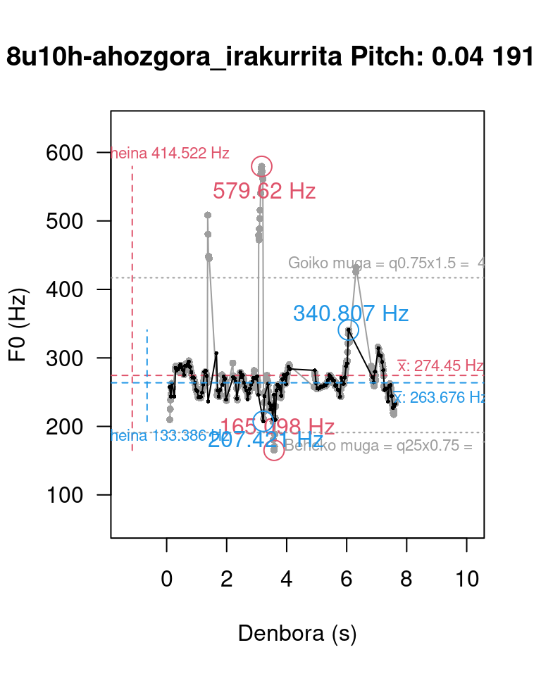
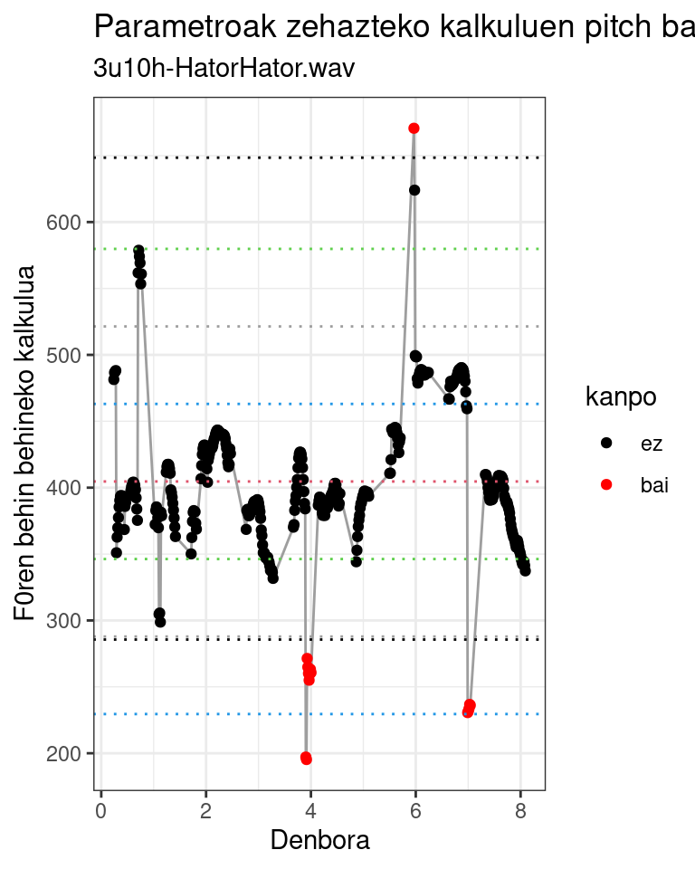
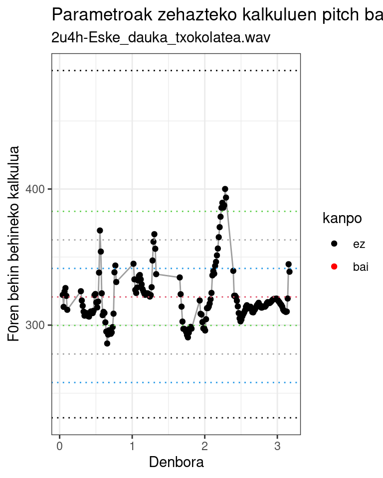
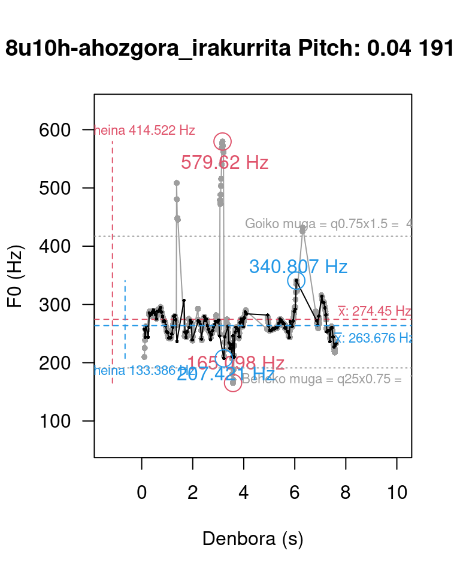
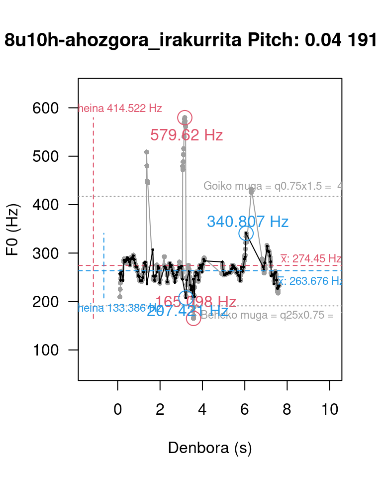

Zarratualdian (Covid-19, 2020… gogoan?) Praat (Boersma & Weenink, 2001) erabiltzen ikasten nenbilen, zehazki oinarrizko frekuentzia -F0- kalkulatzen, marrazten, aztertzen. Horretan nabilela, konturatu nintzen sarri huts egiten zuela berez ateratzen den kalkuluak. Musika eta akustikako eskolatik etorrita, harmonikoen araberako emaitza ematen zuela esango nuen.
Script batzuetan aztertuta konturatu nintzen, gainera, emaitzak ez zirela berberak nik pantailan ikus nitzakeenak eta script-ek sortzen zituztenak. Zentzua hartu zuen Correa (2015) liburuan irakurritakoak, hau da, andrazkoa ala gizonezkoa izan parametro batzuk aldatu beharra dagoela… baina hori ere, segun zelako ahotsa duen, andrazkoak oso grabe hitz egin dezakeelako eta… Eta hau zelan automatizatu?
Han biztu zitzaidan kandelatxoa eta lehenengo hipotesia sortu:
H1: Baliteke eraren bat egotea errorea modelizatu, parametroak egokitu eta errorez garbi kalkulatzeko.
Horrela, lagin batzuk aztertzeari ekin nion; horretarako, Correaren liburuan proposatutako heinen beherengo eta gorengo balioak hartuta kalkuluak egin eta banaketa plotak egin nituen:
Pitch range (Hz): con el rango se define el valor mínimo y máximo de F0. El valor por defecto es 75Hz-500Hz; para voces femeninas el rango recomendado por los autores del programa es 100Hz–500Hz y para voces masculinas 75Hz-300Hz. En todo caso, estos valores son de referencia y deben modificarse de acuerdo con las características de cada hablante. De lo contrario, el programa generará una curva melódica errónea.
– J.A. Correa (2015:34)
Errobera asmatu nahirik
Irudien azterketan nabilela, azterketa bilbiografikoari ere ekin nion, elementuak zein ziren ulertuta. Eta hortxe konturatu nintzen errobera asmatu nahirik nenbilela. De Looze eta Hirst-ek (2008) Praaterako plugin batean irtenbide bat proposatua zuten, Evin eta lagunek (2018) Argentinako hizkeretarako beste bat proposatu zuten eta Zhang eta lagunek (2018) aurkeztua zuten bat erraz ulertzen eta errepikatzen.
Denen irtenbidea, parametroak apur bat aldatu arren, berdintsua da:
Hein zabal eta egonkor batean kalkulatu F0 erroreduna
Kalkulu horien banaketa ezaugarrien arabera zehaztu hurrengo kalkuluak egiteko heinerako parametroak
Parametro berriekin berriz kalkulatu F0 modelatua.
Azken horrek ez luke errorerik izan beharko.
R-n programatu
R eta Praat elkarrekin erabiltzeko hainbat pakete garatu da, ezaugarri batzuk edo beste batzuk erabiltzeko. Honetan hasi nintzenean PraatR , rPraat eta textgRide zeuden CRANeko biltegietan; gaur badira gehiago ere, besteak beste, speackr, phonfieldwork, visvow, soundgen eta beste. Garatzeari utzi zaion arren, denen artean erabiltzen erraz xamar egin zitzaidan PraatR paketea (Albin, 2014), Praateko komandu ugari erabiltzeko aukera ematen du, parametroak ere landuta. Gaur berriro aukeratu behar banu, agian, besteren bat aurkitzea ematen du zentzuzkoena, baina ez nuke jakingo zein. Esan behar da, baina, PraatR paketea astiroago prozesatzen duela rPraat paketeak baino (Bořil & Skarnitzl, 2016), baina emaitzak errazago egiten direla erakusten.
Pakete horrek Praateri egin behar duena agintzen dio programa horretako scriptek egingo luketen antzera. Horrek suposatzen du, besteak beste, nahitaezkoa dela audioak zein karpetatan dauden zehaztuta, horraxe working directory mugitzea, gero norberanera bueltatzeko. Horrez gainera, elementuak Rk eskuratzeko Praatek fitxategiak sortu behar ditu eta fitxategi horiek irakurri behar dira kalkulu berriak egiteko.
Analisi bat edo batzuk
Gorago aipatutako irizpideei segituta EAPIko (Iglesias et al., 2021) lagin batzuk hartu nituen hasieran. Emaitza estandarizatuak lortu nituen (ez ditut hemen erakutsiko) baina interesgarria begitandu zitzaidan etxean egindako grabaketa oso desberdin batzuk sistema honekin tratatzea. Segidan horiek
Laginaren ezaugarriak
Informatzaileak denak familiakoak dira.
2 urteko umea
3 urteko umea
4 urteko umea
8 urteko umea
40 urteko andrea
48 urteko gizona
100 urteko andrea
Eta laginak, luzeraren arabera, multzo bitan ulertu behar dira. Batzuk “luzeak” 10 eta 100 segundu arteko hiru eta bederatzi 3 eta 8 segundu artekoak. Hizkuntzari dagokionez, bizkaiko euskaraz edo gaztelako gaztelaniaz daude.
Emaitzak
Lehenengo kalkuluak egin nituen irakurgaietan aurkitutako parametroen arabera, 50Hz eta 750Hz artean egin dira kalkuluak (Praatek lehenetsita dakartzan balioak 75Hz eta 500Hz dira). Horien emaitzetan nabarmendu ditut desbiderapen estandarren araberako distantziak(1, urdinez; 2, grisez; 3, berdez) eta batazbestekoa (gorriz); horiei gehitu diet beltzez Evin eta bestek (2018) proposatutakoa:
\[behekomuga = q1\times 0.75\]
\[goikomuga = q3\times 1.5\]
Begizko azterketak ikus daiteke balioen multzo handia dagoela ehun balioen inguruan eta askoz kopuru baxuagoan beste balio batzuk 450Hzetik gora. Multzo nagusiko balioek argi mugatzen dute marra beltzek; horrek diosku kasu honetan trinkotasuna ondoen erakusten duen muga Evin-ek eta Argentinako intonaziorako proposatutakoa dela.
Horien gainetik eta azpitik zenbait balio aurkitzen badira ere, kalkuluek sortutako outliertzat hartu behar dira eta ezegokiak oinarrizko frekuentzia adierazteko.

F0ko kalkuluen balioen banaketa
Adibidetzat hurrengoak ematen ditut:
Oinarrizko grabazioa: 8 segundu pasako azalpena, 48 urteko gizonezko batek emandakoa.
Grabazio horren F0ren lehenengo kalkuluan Praatek berreraikitako intonazioa (adi agertzen diren soinu aguduenei)
Grabazio horren F0ren detekzio egokituan oinarrituta, Praatek berreraikitako intonazioa (nik zuzentzat hartuko neukena)
Hurrengo irudian ikus daitezke parametroak zehazteko lehenengo kalkuluen araberako F0ko behin behineko emaitzak. Gorriz nabarmenduta, kalkulu egokitutik kanpo geratutako balioak.
Oinarriak zehazteko kalkuluen araberako emaitzak
Azkenik parametro egokituekin sortutako irudia, aurreko irudiaren eskala gordeta.
]
Kalkulu guzti horien laburpen irudia sortu dut, begizko analisia egin ahal izateko. Horien emaitza lagin luzeagoen kasuan hurrengo irudietan beltzez erakutsitakoa da:

Laburpen irudien azalpena: Grisez erakusten dira oinarrizko kalkuluen araberako datuak; parametro egokituak marra paralelo eta grisen bitartez erakusten dira, heinak, gehieneko eta gutxieeneko balioak gorriz erakusten dira hasierako pausuko kalkuluetan eta urdinez kalkulu egokituen kasuan.
Lagin laburrak
Laginak denboran laburrak direnean ez da hain argi igartzen alderik emaitzetan, behintzat kalkuluok egiteko erabilitako audioen analisian. Hori ikus daiteke bederatzi laginon dentsitate grafikoetan, zeintzutan ia ez den ikusten gehiengotik aldentzen den baliorik.
Lagin laburren F0ren dentsitateak
Laburpen irudi bi ere ekarri ditugu hona, gehien eta gutxien aldentzen diren kalkuluenak.
Alderik nabarmenena hiru urte eta hamar hileko haurraren kantuaren grabazioak erakutsi du:

Alderik ez dute erakutsi, berriz beste bik, bi urteko ume baten azalpenak eta ehun urteko emakume baten erantzunak.

Urte biko umeak amaren musuak deskribatuaz
Ehun urteko andreak zer egingo duen azaltzen dio ilobari
Ondorio batzuk
Bistan denez, grabazioak banan-banan ebaluatzen jakinda eta hala eginda, hobeto zehatz daitezke oinarrizko frekuentzia kalkulatzeko parametroak.
Era berean, lagin handiak edo kopuru handiak aztertzeko, oinarrizko frekuentzia kalkulatzeko bide konplexuagoa erabili behar da lehenetsitako parametroak erabilera hutsetik harago. Bide posible eta egingarria proposatu zuten De Loozek eta lagunek (2008) lehenen eta gero Evin eta bestek (2018) eta Zhang eta bestek (2018), honetan bide horren Rrako implementazioak pareko balioak sortzen dituela ikusi da.
Ekarpen posibleren bat
TextGrideetan silabak, berbak eta abar zehaztuta dauden kasuetan, horien arabera oinarrizko frekuentziaren portaeraren eskuratze automatikoa gara daiteke eta baita etiketazioaren araberako analisiak egiteko aukera ere zabaldu da.
## Ikusizko analisiak egiteko scripta (aurreko scriptaren barruan txertatzekoa)
## Azterketa grafikoa ===================================
## Sartu soinu datuak -----------------------------------
## Lehenengoaren dentsitate plota
plot(density(F0A))
abline(v = mean(F0A), col = 2)
abline(v = mean(F0A)+sd(F0A), col = 4, lty = 2)
abline(v = mean(F0A)-sd(F0A), col = 4, lty = 2)
abline(v = mean(F0A)+sd(F0A)*2, col = 8, lty = 2)
abline(v = mean(F0A)-sd(F0A)*2, col = 8, lty = 2)
abline(v = mean(F0A)+sd(F0A)*3, col = 3, lty = 2)
abline(v = mean(F0A)-sd(F0A)*3, col = 3, lty = 2)
abline(v = quantile(F0A, probs = c(0.25, 0.75)) * c(0.75, 1.5),
col = 1,
lty = 2, cex = 0.5)
## Irudikatu Praat-eko parametroakin --------------------
## Sortu irudia, lehenengo kalkuluen pitch uneak
plot(x = Time,
y = F0A,
pch = 16,
xlab = "Denbora (s)",
ylab = "F0 (Hz)",
las = 1,
main = paste(gsub(OraingoFitxategiIzena,
pattern = '\\....$',
replacement =''),
'Pitch:',
PitchArgumentsB[[1]],
round(PitchArgumentsB[[2]]),
round(PitchArgumentsB[[3]])),
cex = 0.7,
col = 8,
ylim = c(PitchArgumentsA[[2]], max(F0A)*1.1),
xlim = c(min(Time)-(max(Time)-min(Time))/5,
max(Time)+(max(Time)-min(Time))/3))
## Batu marra grix bategaz, ondo ikusteko
lines(x = Time,
y = F0A,
pch = 16,
col = 8)
## Nabarmendu zein une detektau dituan gorengo eta beherengo
points(y = c(max(F0A), min(F0A)),
x = c(PitchTierDataA[PitchTierDataA[,2]==(max(F0A)), "Time"],
PitchTierDataA[PitchTierDataA[,2]==(min(F0A)), "Time"]),
cex = 2, col = 2)
text(y = c(max(F0A)-35,
min(F0A)+35),
x = c(PitchTierDataA[PitchTierDataA[,2]==(max(F0A)), "Time"]+0.1,
PitchTierDataA[PitchTierDataA[,2]==(min(F0A)), "Time"]+0.1),
labels = c(paste(round(max(F0A), 3), 'Hz'),
paste(round(min(F0A), 3), 'Hz')),
col = 2)
## Lehenengo kalkulun batazbestekoa
abline(h = mean(F0A), col = 2, lty = 2)
text(max(Time)+max(Time)/5,
mean(F0A)+15,
labels = bquote(bar(x)*":" ~.(paste(round(mean(F0A), 3), 'Hz'))),
col = 2, cex = 0.7)
## Lehenengo kalkulun heina
segments(x0 = min(Time)-(max(Time)-min(Time))/6, y0=min(F0A),
x1 = min(Time)-(max(Time)-min(Time))/6, y1 = max(F0A),
col = 2,
lty = 2)
text(x = min(Time),
y = max(F0A)+20,
labels = paste('heina', round(max(F0A)-min(F0A), 3), 'Hz'),
col = 2,
cex = 0.7)
## Kalkulu barrion parametroak (goiko eta beheko mugak zehaztu)
abline(h = c(muga.behe, muga.goi),
col = 8,
lty = 3)
text(x = max(Time),
y = c(muga.goi+20, muga.behe-20),
labels = c(paste('Goiko muga = q0.75x1.5 = ', round(muga.goi)),
paste('Beheko muga = q25x0.75 = ', round(muga.behe))),
col = 8,
cex = 0.7)
## Kalkulu barrijagaz --
points(x = TimeB,
y = F0B,
pch = 16,
cex = 0.4,
col = 1)
lines(x = TimeB,
y = F0B,
cex = 0.3,
col = 1)
## Max eta min nabarmentu
points(y = c(max(F0B), min(F0B)),
x = c(PitchTierDataB[PitchTierDataB[,2]==(max(F0B)), "Time"],
PitchTierDataB[PitchTierDataB[,2]==(min(F0B)), "Time"]),
cex = 2,
col = 4)
text(y = c(max(F0B)+25,
min(F0B)-25),
x = c(PitchTierDataB[PitchTierDataB[,2]==(max(F0B)), "Time"]+0.1,
PitchTierDataB[PitchTierDataB[,2]==(min(F0B)), "Time"]+0.1),
labels = c(paste(round(max(F0B), 3), 'Hz'),
paste(round(min(F0B), 3), 'Hz')),
col = 4)
## Batazbesteku
abline(h = mean(F0B), col = 4, lty = 2)
text(max(Time)+max(Time)/5,
mean(F0B)-20,
labels = bquote(bar(x)*":" ~.(paste(round(mean(F0B), 3), 'Hz'))),
col = 4,
cex = 0.7)
## Heina
segments(x0 = min(TimeB)-(max(Time)-min(Time))/10, y0 = min(F0B),
x1 = min(TimeB)-(max(Time)-min(Time))/10, y1 = max(F0B),
col = 4,
lty = 2)
text(x = min(TimeB),
y = min(F0B)-20,
labels = paste('heina', round(max(F0B)-min(F0B), 3), 'Hz'),
col = 4,
cex = 0.7)
## ggplot
p1 <- data.frame(F0A, Time) |>
ggplot(aes(F0A)) +
geom_density() +
geom_vline(xintercept=c(mean(F0A)-sd(F0A)*3,
mean(F0A)-sd(F0A)*2,
mean(F0A)-sd(F0A),
mean(F0A),
mean(F0A)+sd(F0A)*3,
mean(F0A)+sd(F0A)*2,
mean(F0A)+sd(F0A),
quantile(F0A, probs = c(0.25, 0.75)) * c(0.75, 1.5)),
color = c(4, 8, 3, 2, 3, 8, 4, 1, 1), lty = 3)+
theme_classic() +
labs(title = 'Lehenengo kalkuluen emaitzen dentsitatea',
subtitle = OraingoFitxategiIzena)
print(p1)
p2 <- data.frame(F0A, Time) |>
mutate(kanpo = ifelse(F0A>=quantile(F0A, probs = 0.25)*0.75&
F0A<=quantile(F0A, probs = 0.75)*1.5,
yes = 'ez',
no = 'bai') |>
as.factor()) |>
ggplot(aes(Time, F0A, color = kanpo)) +
geom_line(color = 8) +
geom_point() +
scale_color_manual(values = c("ez" = "black", "bai" = "red")) +
geom_hline(yintercept=c(mean(F0A)-sd(F0A)*3,
mean(F0A)-sd(F0A)*2,
mean(F0A)-sd(F0A),
mean(F0A),
mean(F0A)+sd(F0A)*3,
mean(F0A)+sd(F0A)*2,
mean(F0A)+sd(F0A),
quantile(F0A, probs = c(0.25, 0.75)) * c(0.75, 1.5)),
color = c(4, 8, 3, 2, 3, 8, 4, 1, 1), lty = 3)+
theme_bw() +
labs(title = 'Parametroak zehazteko kalkuluen pitch balioak',
subtitle = OraingoFitxategiIzena) +
ylab('F0ren behin behineko kalkulua') +
xlab('Denbora')
print(p2)
p3 <- data.frame(F0B, TimeB) |>
ggplot(aes(TimeB, F0B)) +
geom_line(color = 8) +
geom_point() +
geom_hline(yintercept=c(mean(F0A)-sd(F0A)*3,
mean(F0A)-sd(F0A)*2,
mean(F0A)-sd(F0A),
mean(F0A),
mean(F0A)+sd(F0A)*3,
mean(F0A)+sd(F0A)*2,
mean(F0A)+sd(F0A),
quantile(F0A, probs = c(0.25, 0.75)) * c(0.75, 1.5)),
color = c(4, 8, 3, 2, 3, 8, 4, 1, 1), lty = 3)+
theme_bw() +
labs(title = 'Behin betiko kalkuluen pitch balioak',
subtitle = OraingoFitxategiIzena) +
ylab('F0 egokitua') +
xlab('Denbora')
print(p3)
Erreferentziak
Albin, A. (2014). PraatR: An architecture for controlling the phonetics software "praat" with the r programming language. Journal of the Acoustical Society of America, 135(4), 2198. https://doi.org/ggkjz5
Bořil, T., & Skarnitzl, R. (2016). Tools rPraat and mPraat (P. Sojka, A. Horák, I. Kopeček, & K. Pala, Eds.; pp. 367–374). Springer International Publishing. https://doi.org/ggc7w6
Correa, J. A. (2015). Manual de análisis acústico del habla con praat. Instituto Caro y Cuervo.
De Looze, C., & Hirst, D. (2008). Detecting changes in key and range for the automatic modelling and coding of intonation. Speech Prosody, 4.
Evin, D., Cossio-Mercado, C., Torres, H. M., Gurlekian, J., & Mixdorff, H. (2018). Speech Prosody 2018. 680–684. https://doi.org/ggqbn5
Iglesias, A., Etxebarria, A., & Naia Eguskiza. (2021). Euskararen Atlas Prosodiko Interaktiboa (EAPI). Huarte de San Juan. Filología y Didáctica de la Lengua, 21, 227–241. https://doi.org/10.48035/rhsj-fd.21.10
Zhang, Q., Cao, C., Li, T., Xie, Y., & Zhang, J. (2018). 2018 14th IEEE international conference on signal processing (ICSP). 939–943. https://doi.org/ggqn2r


 
